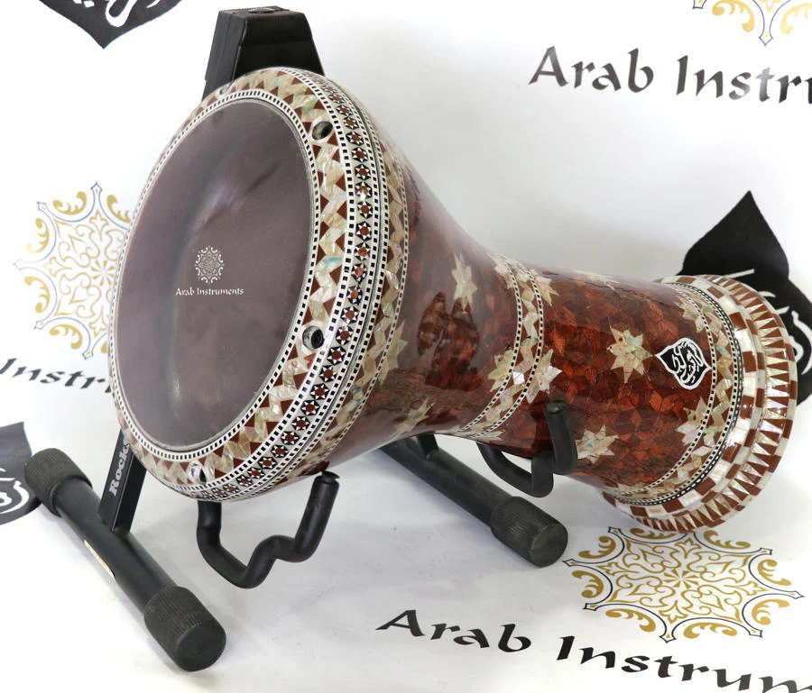

The darbuka(tabla drum)
This is my first website about the insturment called darbuka
What is a darbuka drum?
it is the go to precussion/drum for most middle east counties
A darbuka (also known as a doumbek, tablah, or derbake) is a single-head, goblet-shaped hand drum that serves as the rhythmic heartbeat of Middle Eastern, North African, and Balkan music. Played with the hands and fingers rather than sticks, it is celebrated for its ability to produce both deep bass tones and crisp, high-pitched snaps.
Why do i love it so much?
it is the drum i grew up around so i have always wanted one.
why is it my favorite?
i love THIS DRUM more because of how simple it is compared to a trditional american drum set and how it sounds is kind of different
